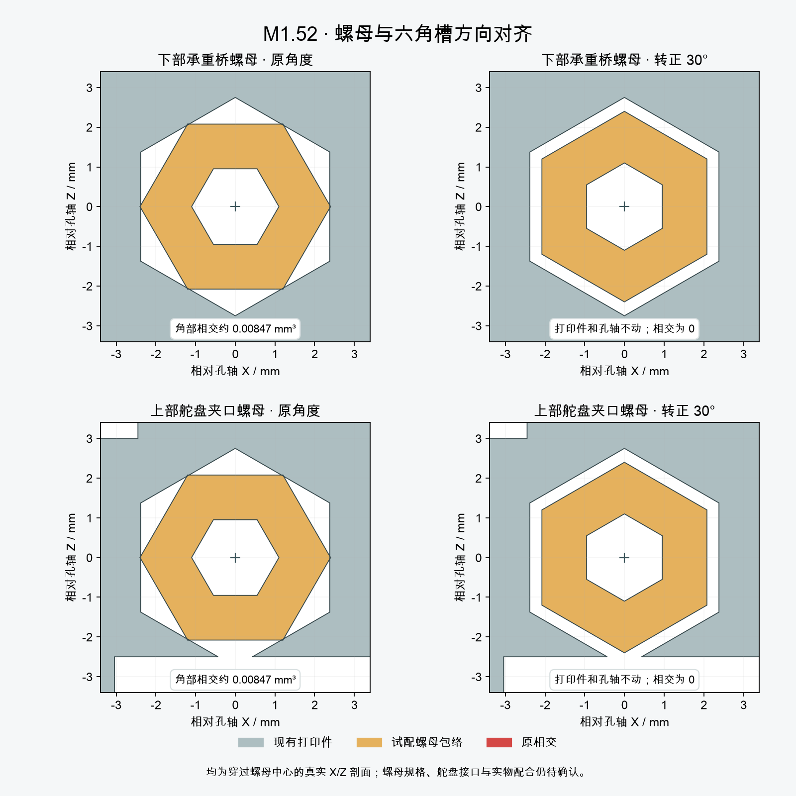

两枚螺母与六角槽已对齐
V1.2-M1.52 · 2026-10-06T12:47:26.990743+00:00
两枚现有试配六角螺母绕各自原螺钉轴转正30°，与原六角槽对齐。孔位、螺钉轴、尺寸和全部打印件保持；没有扩大孔槽或改变采购选型。 Blender、STL、预览与新版视频已同步；21件STL逐文件保持，仍是16件本体打印件。

原先每处约0.00847mm³的角部相交已消除。图中橙色是试配螺母包络，实际螺母规格、螺纹和啮合尚未定型。
检查结果与装配顺序
| 项目 | 本次证据 |
|---|
| 改动范围 | 仅两枚螺母做刚体转动；另199件机器人实体的坐标和三角网格保持。全部21件STL与M1.51字节一致。 |
| 下部横向锁紧 | 身体前后壳及线束暂不安装。先从后侧装螺母，再从前侧装横向螺钉；名义螺钉、螺母和刀杆/手柄的150mm连续轴向进入包络未检出碰撞。真实批头啮合、操作空间和扭矩需验证。 |
| 上部舵盘夹口 | 仍BLOCKED：头架装好后的直线装螺母路径与Pitch_Yoke相交；最终舵盘、短轴和夹紧方式仍待厂家资料。本次没有将已预装的动画当作初装验证。 |
| 头部与外壳 | 整机刚体、组合头部姿态、车轮与拓扑检查已重跑；前后壳含附件各275个位置、底部螺钉和工具路径复核通过。 |
| 完整线束 | C6穿线口与导线约束候选未应用。端部、完整恒定长度线束、应力释放和带线合壳仍未完成。 |
下部反力连接的螺母、螺钉与名义工具进入路径通过。上部舵盘夹口仍不能按所测直线路径在头架装好后塞入螺母；完整初装、真实舵盘与五金配合仍未完成。 几何检查不能代替PA12强度、实物插合或完整线束验证；本轮无制造放行。
下部进入与上部受阻记录 · 两件刚体变换与座孔检查 · 当前检查及历史证据边界 · 当前外壳与底部工具复核 · 执行记录
来源主模型SHA256：9a254621bfb01e040d3cef12bdbe5757052d05f19457c45b4c8999109187ddbd